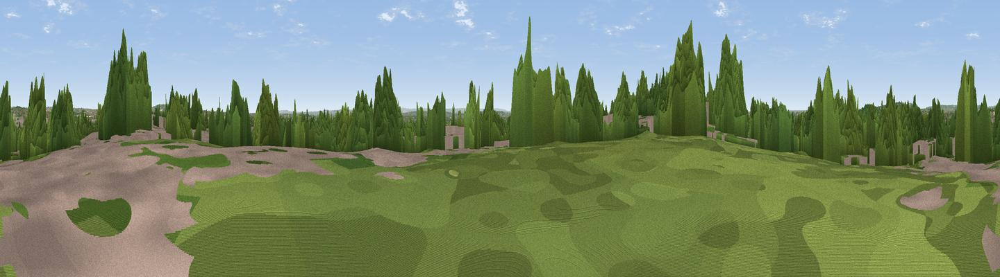

Hanger Hill
#40678 in England · top 40% of its area beats it · near EalingWhere it is
The exact computed spot (TQ 18708 82073). Click the marker for map links.
The view, rendered

A 360° render of this exact spot computed from the terrain model, tree cover and land cover — summer colours, afternoon light, calibrated against photographs of famous viewpoints. Real trees, hedges and buildings will differ in detail.
The panorama
Grey silhouette: terrain skyline in each direction (720 bearings, Earth curvature and refraction included). Dashed green: skyline with trees (+15 m) and buildings (+8 m) as obstacles. Blue strip: how far the ground is visible on each bearing.
Where the view opens
Wedge length = distance to the farthest visible ground on that bearing (vegetation-aware). Rings at 10, 25 and 50 km.
What fills the view
54% built-up · 34% woodland · 12% grassland
Angular shares of the visible panorama (visual magnitude), not map area. Landscape diversity 0.43 (0–1 Shannon).
Key numbers
More beautiful places nearby
The staircase of upgrades: each row has a higher view potential than everything closer. Driving times are estimates from straight-line distance, calibrated against real road routing — check an actual route before setting out.
| Place | Direction | Drive | Score |
|---|---|---|---|
| Viewpoint near Wembley | NW · 3 km | ~8 min | 34.9 |
| Horsenden Hill | NW · 3 km | ~8 min | 45.0 |
| Viewpoint near Northolt | WNW · 6 km | ~13 min | 47.3 |
| Harrow on the Hill | NNW · 6 km | ~13 min | 60.7 |
| Saddle Knob | S · 30 km | ~47 min | 66.7 |
| Viewpoint near Lower Kingswood | S · 30 km | ~47 min | 67.8 |
| Box Hill | S · 30 km | ~48 min | 70.4 |
| Viewpoint near Box Hill Village | S · 31 km | ~48 min | 71.0 |
51.52511, -0.29027 · source: dobih hill · position refined by local search. Computed location — check access rights before visiting.